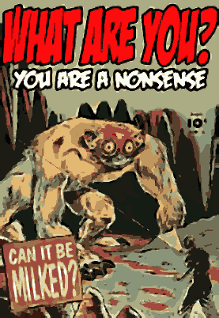

Things that I gone and done
Prototypes and unfinished stuff
-
Nokia 3310 - a recreation of the Nokia 3310 phone interface, sadly non-interactive
-
Iso Canvas - experiment rendering walls in isometric projection
-
Rect Editor - prototype of a generic editor for documents with rectangular items, drag, resize, layers etc
-
There's Ghosts in Your Blood - concept art for a 2D, 1 bit game
-
Tower of Tempests - prototype 2d roguelike game engine
-
Tower - prototype of tower defense game
Places
Links
Narrative Design
Pixel Art